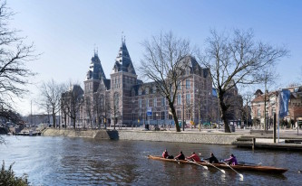
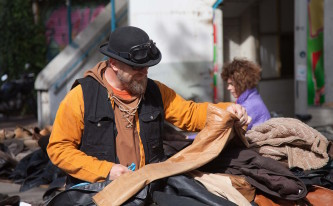
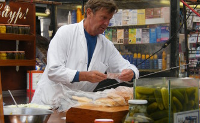

Not to miss
If you like design, you’ll love…
Stedelijk Museum
The bathtub-shaped Stedelijk Museum has an amazing collection of modern and contemporary art. On display are masterpieces by Cézanne, Picasso, Matisse, Chagall and Malevich. Post-1945 artists include Lichtenstein, Nauman and Warhol.
Van Gogh Museum
Another highlight is the Van Gogh Museum, which holds 200 paintings and 500 drawings produced by the troubled genius.
Rijksmuseum
Yes, you can see Rembrandt’s Night Watch and many other masterpieces including from Rembrandt, Hals, Vermeer and Steen. The newly re-opened Rijksmuseum has a collection of over 1 million objects.

The Ferry to the Eye Film Museum
Take the Ferry behind Central Station to the new built Eye. It’s a five minute ride across the IJ river. Catch a film or visit the film museum.
Architecture
Amsterdam’s architecture goes far beyond windmills. Take a walk and explore different facets of Dutch design:
- The Tuschinksi is a stylistic mix of Art Deco, Art Nouveau, Jugendstil and Amsterdam School. Walk into the lobby of this old movie palace and it feels like you are walking into a dream.
- Amsterdamse School, the city’s own Art Nouveau-influenced movement.
- Marvelous bridges, beautiful, functional and innovative ways to cross so much water.
- Repurposed buildings, discover the former functions of Amsterdam’s most impressive buildings.
Other fun things to do
Boom Chicago
Boom Chicago is American Improv at its very best. If you like to laugh until it hurts, then visit Boom. We arranged a special discount of 15 euros per show. For reservations, mail reservations@boomchicago.nl or call 0900-BoomChicago. Use the promo code: Interaction Design Conference.
Ice skating
Ice skating is the closest the Dutch come to a national religion. There are several ice skating possibilities. There are ice rinks by the Leidseplein, Museumplein and by the Jaap Edenbaan in the east part of town.
Shopping

Dutch (design) shops are filled with whimsical items. Fun neighborhoods and shopping streets are:
- Jordaan, former working-class neighborhood transformed by charming boutiques and cafés.
- Haarlemmerstraat, quaint boutiques mixed with gourmet specialty shops.
- Utrechtsestraat, everything from designer house wares and clothes to Amsterdam’s biggest music shop.
- Waterlooplein, Amsterdam’s largest daily flea market in the former Jewish quarter.
- De Pijp (Albert Cuypmarkt), a vibrant neighborhood with a mix of students and families.
- Dapperbuurt (Dappermarkt), a lively, multicultural melting pot dating back to the 19th century.
- Negen Straatjes, nine small streets with stylish boutiques from mainstream and lesser-known brands.

Further reading
Dutch things you may (or may not) want to eat
- Snert (Pea Soup), only served in winter, traditionally with smoked sausage.
- Haring (Raw herring), plain or with pickles and onions.
- Boerenkool stamppot (Kale and mashed potatoes), as Dutch cuisine as it gets.
- Pannenkoeken (Pancakes), sweet or savory and not just for kids.
- Stroopwafels (Syrup waffles), best when still warm.
- Kroketten (Croquettes), locals swear by Van Dobben (Korte Reguliersdwarsstraat) for these fried snacks.
- Frikandellen (Deep-fried minced-meat hot dog), served with mayonnaise, curry ketchup and chopped raw onion. Want to challenge Sjonnie Noordeinde’s world record? In 2005 he consumed 47 frikandellen in one hour.
- Drop (Licorice), sweet or savory, you either love it or you find it disgusting.
Chances are that wherever you live, there are no Dutch restaurants. Here’s why Dutch cuisine hasn’t conquered the world.